Tiangong Space Station is operated by CMSA (China Manned Space Program). Its stated purpose is to develop and gain experience in spacecraft rendezvous technology, permanent human operations in orbit, long-term autonomous spaceflight of the station, regenerative life support technology and autonomous cargo and fuel supply technology. It will also be a platform for orbital science and technology for future deep space exploration.
The station is a multi-modular design with currently three main modules. Each module was launched, un-crewed, separately into low Earth orbit, around 380 to 400 km above the Earth's surface. They were then permanently berthed together. A fourth module is planned to co-orbit with the station in the near future.
The size of a single module is limited by the capacity of the carrier rocket to lift it into the desired orbit. Using a number of launches allows for a larger station and more complex station to be flown. It also allows for future expansion of the station by launching and adding more modules.
Each Tiangong module was launched with two folded solar power arrays attached to their sides. These were deployed once the modules reached orbit and were berthed together. Future modules can also carry their own solar arrays to increase station power as needed.
Tiangong is the third multi-modular space station to be flown; following the Russian Mir station and the International Space Station (ISS).
The station has 23 experimental racks in the pressurised sections. There is also platforms for exposed experiments on the Wentian and Mengtian laboratory modules. Over 1,000 experiments are scheduled to be conducted on the station.
The programmed experiments include:
* Space life sciences and biotechnology,
* Microgravity fluid physics and combustion,
* Material science in space,
* Fundamental Physics in Microgravity,
* Multipurpose Facilities
Tiangong is equipped with the Chinese Docking Mechanism, first used by Shenzhou 8 spacecraft and the Tiangong-1 space laboratory. This system is based on the APAS🔗-89/95 developed by Russia and NASA. It is uncertain if the system is compatibility with current docking mechanisms on the ISS, which are also APAS-based.
Tiangong's core module has five docking ports including the two used for the permanent berthing of the laboratory modules. The other ports are used for visiting spacecraft and the temporary docking of modules during assembly of the station.
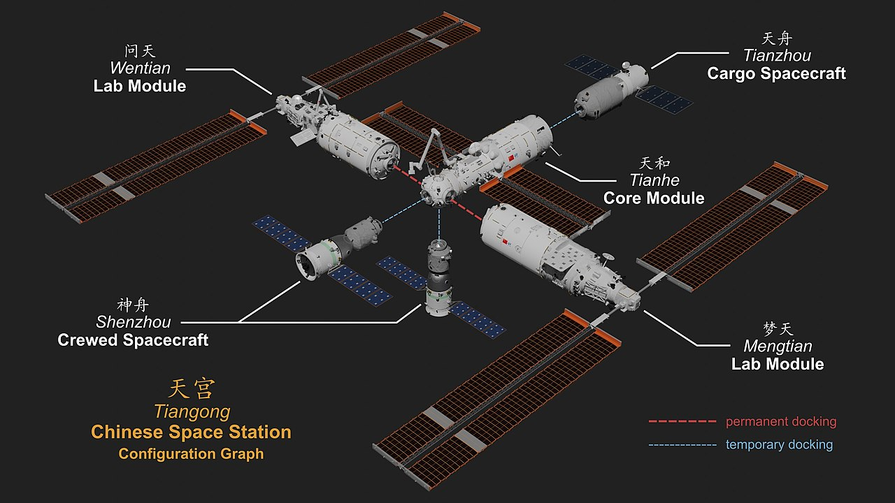
Tiangong's main modules are:
1. Tianhe ▽ (Harmony of the Heavens) - the core module, launched in 2021. It provides life support and living quarters for three crew members and houses the station's guidance, navigation, and orientation control systems. It also contains the main power, propulsion, and environmental control systems.
2. Wentian ▽ (Quest for the Heavens) - the first laboratory module, launched in 2022. It provides additional avionics, propulsion, and life-support capacity as backups to Tianhe. It includes three short-term crew quarters for use during handovers and features a dedicated airlock for extravehicular activities (EVAs).
3. Mengtian ▽ (Dreaming of the Heavens) - the second laboratory module, also launched in 2022. It provides expanded in-orbit experiment capability and features a dedicated cargo airlock designed specifically for transferring scientific payloads between the station interior and exterior.
4. Xuntian ▽ (Touring the Heavens) - a co-orbiting space telescope module, scheduled for 2026. It is a planned independent Chinese space station telescope which will feature a 2-metre diameter primary mirror. This will have a field of view around 300 times larger than the Hubble Space Telescope. It will co-orbit with the space station in a slightly different orbital phase, which will allow for periodic docking with the station for maintenance.
Select the module name above to go to the relevant section below for more detail.
Reference: Wikipedia - Tiangong Space Station | Tianhe | Wentian | Mengtian | Xuntian
eoPortal - Tiangong | China Space Report - Tiangong | Science Partner Journals - Tiangong
The three current Tiangong modules form the completed station's phase one. They were launched consecutively and assembled in the following sequence:
1. In April 2021 the core module, Tianhe, was launched into low Earth orbit. In the following year three cargo spacecraft and a three crews visited Tianhe.
2. In July 2022 the first laboratory module, Wentian, docked with the forward axial port of Tianhe.
3. Wentian then used a specialized robot arm to relocate itself to the starboard (right) docking port of Tianhe. It remains permanently berthed to this port.
4. In October 2022 the second laboratory module, Mengtian, docked with the forward axial port of Tianhe.
5. Mengtian then used a specialized robot arm to relocate itself to the port (left) docking port of Tianhe. It remains permanently berthed to this port. The third station crew, in residence at the time, completed the installation of both laboratory modules with a number of space walks (EVA's).
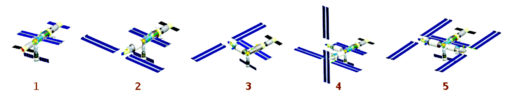
One of the advantages of a multi-modular design is the ability to expand the station at a later date. It has been proposed that Tiangong could eventually be doubled in size. An additional core module, similar to Tianhe, could be berthed to Tianhe's forward docking port. Two additional laboratory modules could then be berthed to the new core module.
As these new modules would have their own solar arrays, the stations total power supply would be increased proportionately. The station could then support six crew members and their spacecraft for long duration missions.
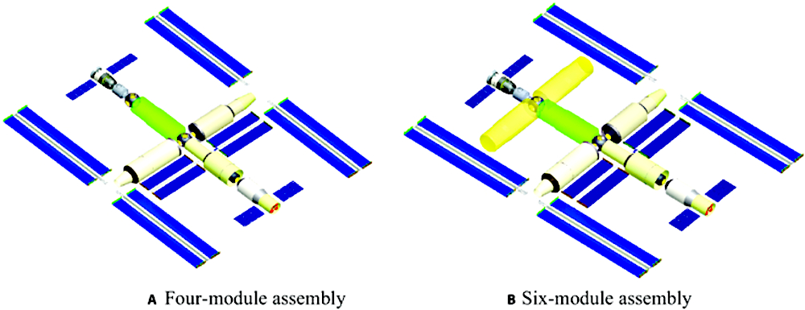
Tianhe core module was the first module of the Tiangong space station to be launched. It resembles the Zvezda Service Module of the International Space Station in appearance and arrangement. Tianhe provides life support and living quarters for three crew members. It also provides guidance, navigation, orientation control power and propulsion for the station.
It has passive APAS-type docking ports. Four located on the front docking hub and one on the rear end of the service compartment. There are also one robotic arm, two pairs of solar panel wings, heat dissipation panels and docking radar/optical sensors mounted on Tianhe's exterior.
Tianhe supports a long robotic arm, nicknamed Chinarm with functions similar to the Canadarm2 on the International Space Station. Chinarm has a load capacity of 25 tonnes, an operating radius of 10 m and features 7 axes of motion.
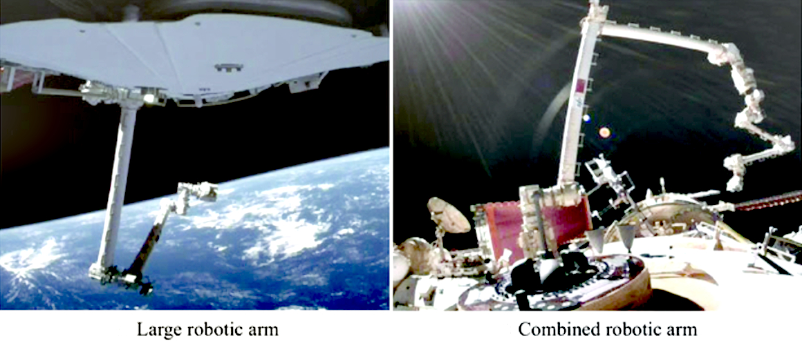
It can be used to move modules, spacecraft and cargo as well as supporting EVA's.
It can also be used in combination with the Wentian module's small robotic arm. (shown right)
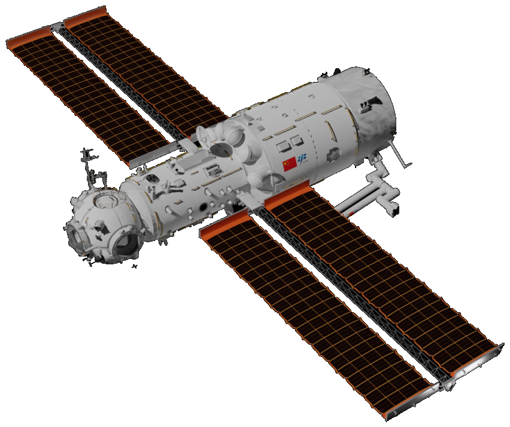
Electrical power is provided by two steerable solar power arrays, which use photovoltaic cells to produce electricity. Energy is stored in batteries to power the station when it moves into the Earth's shadow. The solar arrays have a total span of 60 m, with three panels on each wing. The panels are one-axis steerable to maintain maximum illuminance, with sun sensors between panels to allow automatic adjustment of the panel angle.
The station dissipates excess heat through a combination of active and passive thermal control systems, similar in principle to other space stations like the International Space Station (ISS), but with design features tailored to its modular architecture.
Active thermal control used mechanically pumped liquid cooling loops to collect, transport, and reject excess heat generated by equipment, experiments, and crew. The heated fluid is pumped to external radiators, where the heat is rejected into space via thermal radiation. On Tianhe the primary radiators are large, flat, white/gray panels mounted externally on the sides or resource section. They are integrated into the module's exterior surface rather than being extended wings.
Tianhe has passive thermal control using multi-layer insulation and specialized coatings on external surfaces.
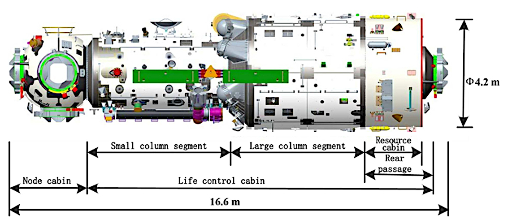
Tianhe consists of three main sections:
1. The pressurised node cabin at the front which forms the docking hub,
2. The pressurised life control cabin containing living quarters and control center,
3. The un-pressurised resource cabin which the main engines, propellant tanks, power system and some communications components.
The Node cabin is the spherical structure at the front of Tianhe. This forms the forward docking hub with four docking ports; axial, port, starboard and nadir. The axial and nadir ports of the module are fitted with rendezvous equipment and are used for docking visiting Tianzhou cargo spacecraft and the crewed Shenzhou spacecraft. Each laboratory modules was, in turn, first docked to the axial port and the relocated to the starboard docking port, Wentian, and port docking port, Mengtian.
The node cabin can also be used as an EVA airlock. The zenith port has been modified to act as an airlock hatch. This was used temporarily before the installation of the Wentian module which has a dedicated airlock.
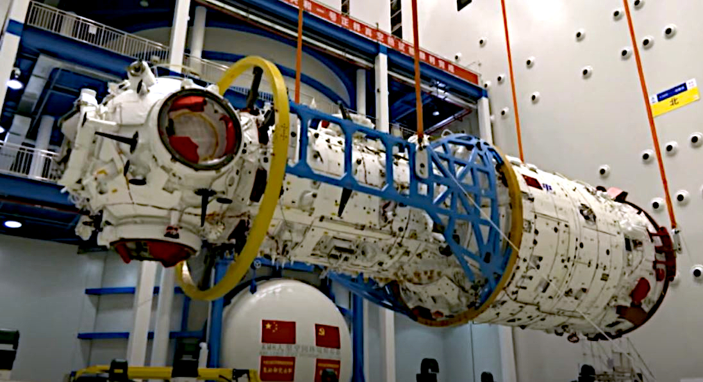
The Life control cabin consists of a small and a large cylindrical segment as well as a rear passage the rear axial docking port. The living quarters are contained within the small segment, and consist of sleeping areas, a kitchen and toilet, fire control equipment, air processing and control equipment, computers, scientific apparatus, and ground communications equipment.
The large segment contains the main work and control area with the station's central control consoles and primary workstations for managing the entire space station as well as the scientific experiment racks, exercise facilities and medical monitoring and health area.
The resource cabin is the aft un-pressurised service section. It is a cylindrical non-habitable compartment at the rear of the life control cabin which houses systems for power, propulsion, and thermal management. These include the main propulsion engines and propellant tanks, ion thrusters mounted externally for long-term station-keeping and orbit maintenance, power system components and thermal control radiators.
This section is inaccessible to the crew and designed for redundancy, with some functions backed up by the Wentian and Mengtian modules. It plays a vital role in sustaining the entire station's orbit and operations.
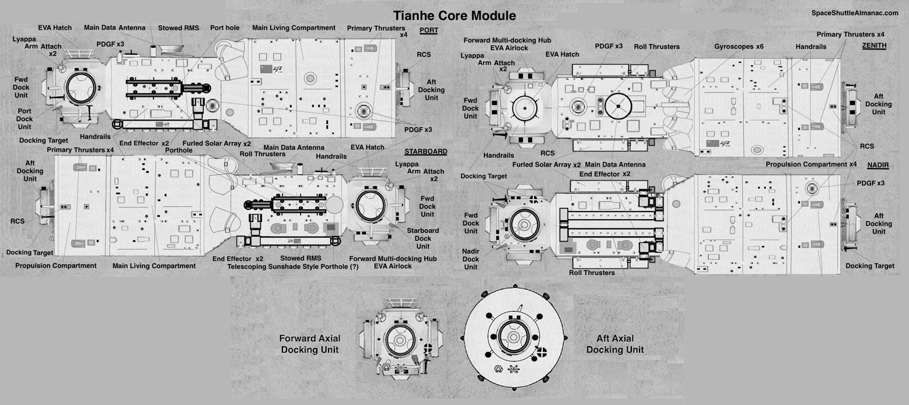
The aft docking port ia an axial port for visiting spacecraft, primarily Tianzhou cargo spacecraft which are used for resupply and refueling. A pressurised tunnel through the center of the resource cabin connects the life control cabin to the aft docking port.
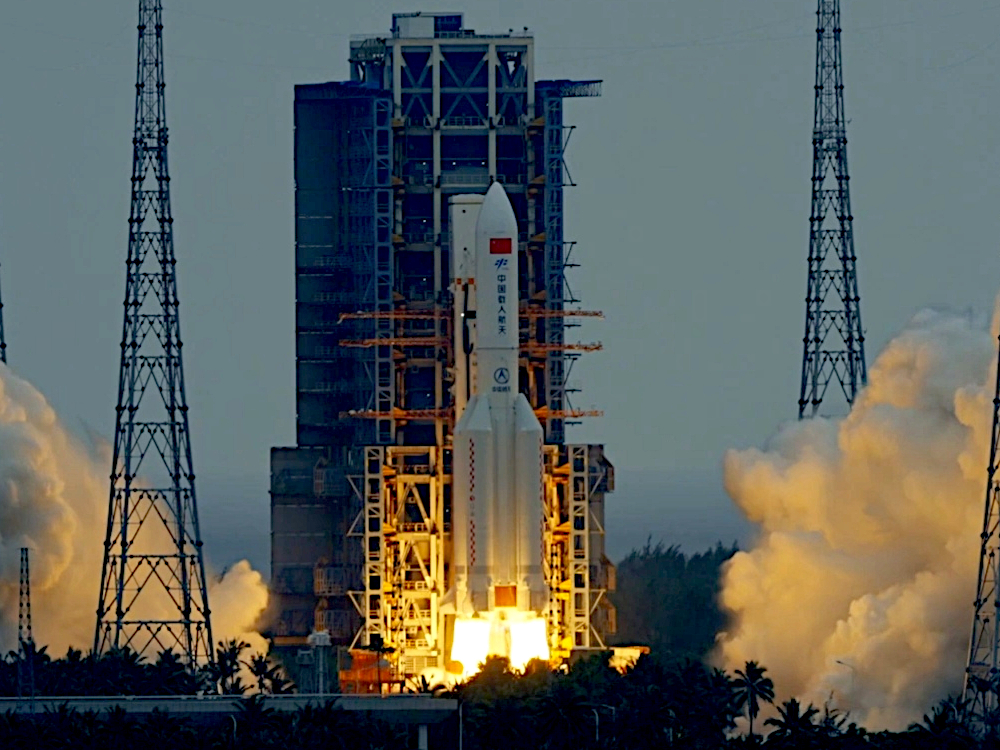
Launcher: Long March 5B
Mass: 22,500 kg
Length: 16.6 m
Width: 4.2 m
Pressurised volume: 113 m3
Habitable volume: 51 m3
The Wentian (Quest for the Heavens) laboratory cabin module is the second module to be launched for the Tiangong station. It is the first of the station's Laboratory Cabin Modules and the first module added to the Tianhe core module. Wentian was initially docked to the forward axial port of the Tianhe core module. It was later relocated to the starboard docking port of Tianhe which is its permanent location.
Wentian is fitted with a mechanical arm called the "indexing robotic arm", similar in function to the Lyappa arm used on the Mir space station, was used to relocate the module. Wentian also has a small 5 m long robotic arm that can be used to supplement Tianhe Chinarm for manipulating extravehicular payloads and assisting EVAs. Its positioning accuracy is 5 times better than the Chinarm. Both arms can 'crawl' around the station by attaching and detaching from various grapple points.
Wentian provides additional navigation avionics, propulsion and orientation control as backup functions for the Tianhe Core Module. It also provides a pressurized environment for science experiments in zero gravity. Experiments can also be placed on the outside of the modules, for exposure to the space environment, cosmic rays, vacuum, and solar winds.
Wentian serves as a system-level backup for the critical platforms of the Tianhe core module, such as the energy management system, the information management system, the control system, and the manned environment system.
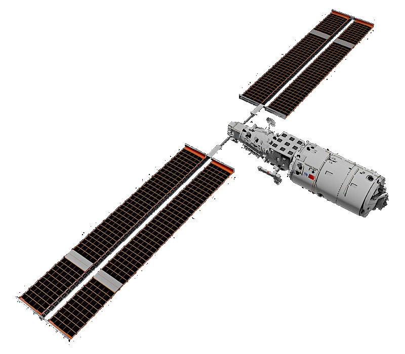
Electrical power is provided by two steerable solar power arrays using photovoltaic cells to convert sunlight into electricity. Each array has a wingspan of over 55 m and an energy collection area of 110 m2 and a 2-degree-of-freedom drive mechanism. They can be folded and unfolded in orbit and allow for on-orbit maintenance and replacement.
The station dissipates excess heat through a combination of active and passive thermal control systems, similar in principle to other space stations like the International Space Station (ISS).
Active thermal control used mechanically pumped liquid cooling loops to collect, transport, and reject excess heat generated by equipment, experiments, and crew. The heated fluid is pumped to external radiators, where the heat is rejected into space via thermal radiation.
Wentian has its own dedicated radiator panels, visible as prominent rectangular or looped structures on the module bodies. These include specialized lighter-weight radiators for supporting high-heat external payloads and experiments.
Wentian also has passive thermal control by using multi-layer insulation and specialized external coatings.
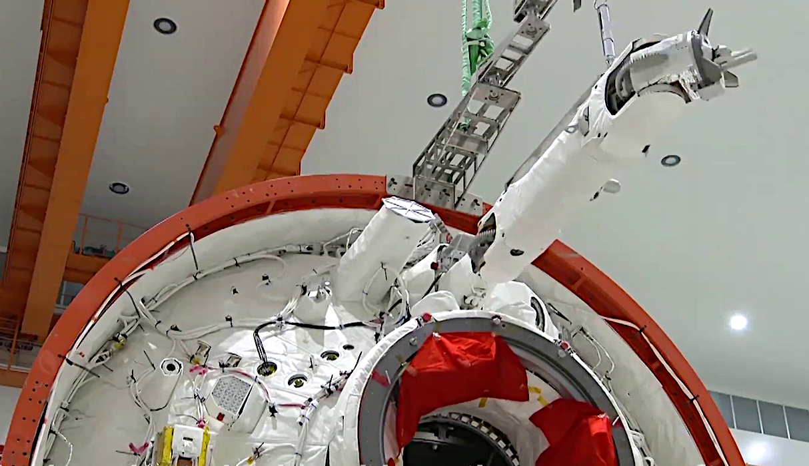
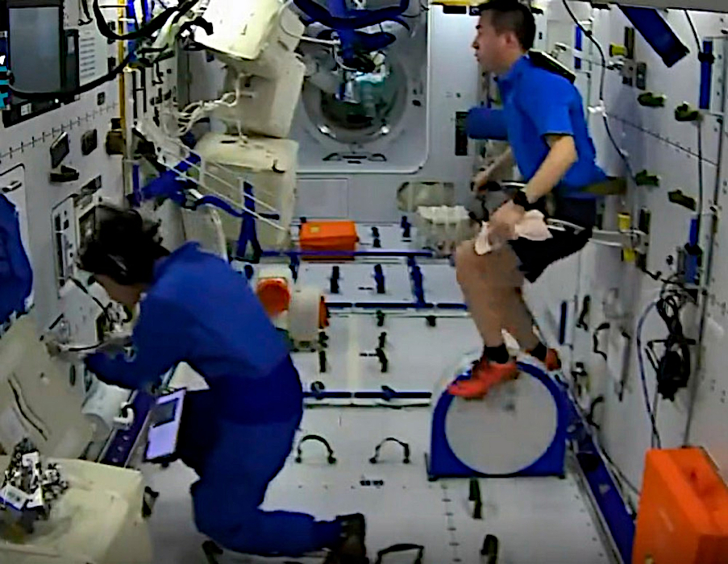
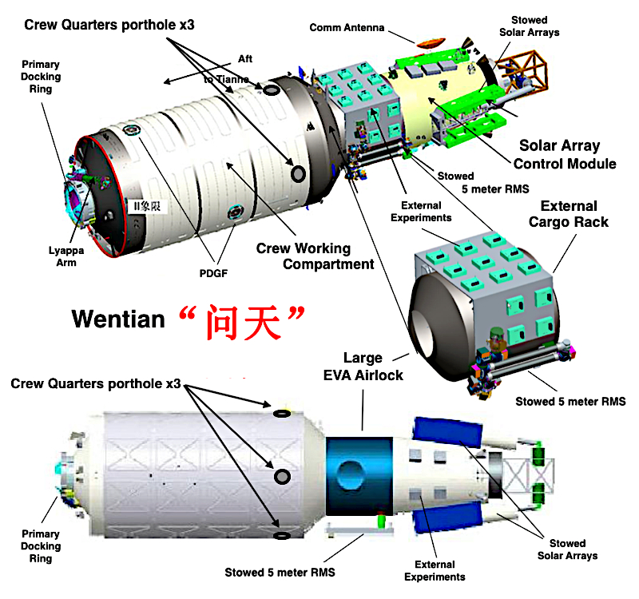
Wentian consists of three main sections:
1. A fully pressurised Working Cabin closest to Tianhe with additional crew quarters,
2. An Airlock Cabin in the middle for crew and cargo,
3. An un-pressurised Resource Cabin at the outer end which also supports the solar arrays.
The working cabin is pressurised and provides space for scientific and technological experiments including a suite of Earth-observation instruments. It has quarters for additional crew during hand-overs and is also used as a storage space for consumables and supplies used by the crew.
It is also fitted with a secondary control system as a backup to the main control system in the core module. This system-level backup is for energy management, information, control and manned environment systems.
Prior to the installation of the Wentian module, crew EVAs were made from Tianhe's Node cabin through it's zenith hatch. Once the Wentian module was operational it's dedicated Airlock cabin became the preferred base for crew EVAs. The Airlock cabin has more space than the Tianhe's Node and larger hatches for ease of movement.
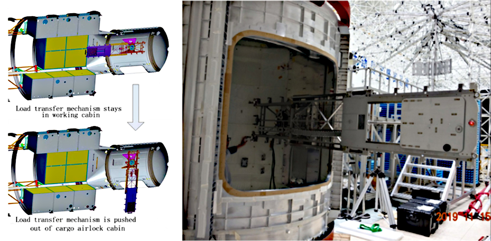
Wentian's Airlock cabin is large enough to accommodate all three crew members as a shelter in case of a station emergency. It has been designed to facilitate the movement of large cargo items to and from the Working cabin and the station's exterior. A load transfer system can be extended from the airlock into the Working cabin, retracted and then extended out through the airlock hatch. Cargo is then moved using Wentian's small robot arm. The reverse procedure can be used to transfer cargo into the station.
The cylindrical Airlock cabin is surrounded on three sides by a box like structure which supports external experiments and the small robot arm (RMS).
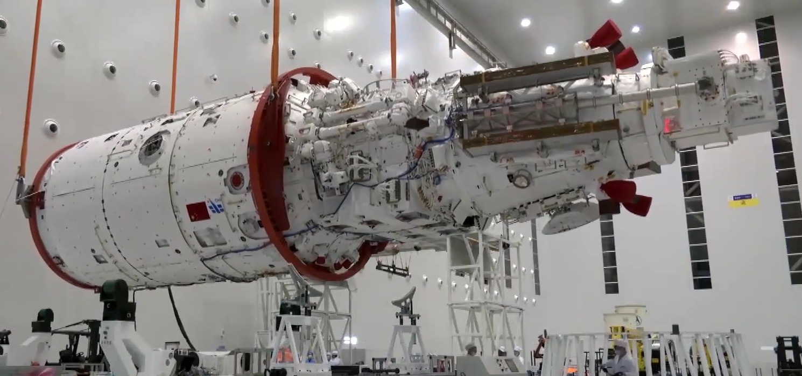
The conical shaped Resource cabin's main function is to support two solar array wings and their drive mechanisms.
These arrays were launched with Wentian folded against the sides of the Resource cabin. After Wentian was moved to its permanent position, the arrays were swung out on support beams and deployed.
Externally the resource cabin also supports thermal radiators, a comms antenna and mounting points for exposed scientific payloads.
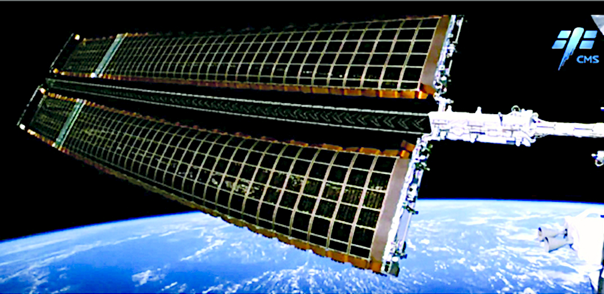
The un-pressurised interior of the Resource cabin contains backup propulsion and attitude control elements for the Tianhe core module. It also contains power distribution and supporting systems such as batteries, regulators, and interfaces tying into the station's unified energy grid.
Launcher: Long March 5B
Mass: 22,000 kg
Length: 17.9 m
Width: 4.2 m
Pressurised volume: 118 m3
Habitable volume: 39 m3
The Mengtian (Dreaming of the Heavens) laboratory cabin module is very similar in size and layout to the Wentian laboratory cabin module. The main difference is Mengtian's airlock cabin which is designed for experiment deployment instead of crew EVA's.
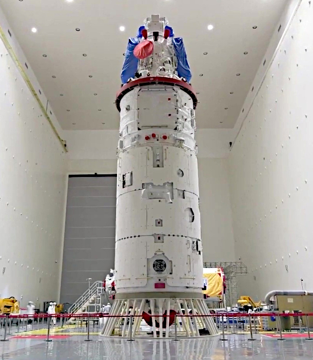
Mengtian is the third main module to be added and the last permanent module for phase one of the Tiangong station construction. The fourth module, Xuntian, only docks temporarily with the station.
Similar to Wentian, Mengtian was initially docked to the forward axial port of the Tianhe core module. It was later relocated to the port side docking port of Tianhe as its permanent location.
Mengtian is fitted with a mechanical arm called the "indexing robotic arm", similar in function to the Lyappa arm used on the Mir space station, was used to relocate the module.
Mengtian's primary purpose is for microgravity scientific research. It also provides backup systems for the station's attitude control and power
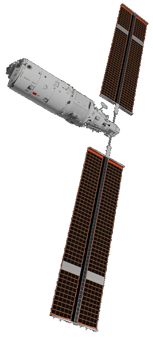
Electrical power is provided by two steerable solar power arrays using photovoltaic cells to convert sunlight into electricity. Each array has a wingspan of over 55 m and an energy collection area of 110 m2 and a 2-degree-of-freedom drive mechanism. They can be folded and unfolded in orbit and allow for on-orbit maintenance and replacement.
The station dissipates excess heat through a combination of active and passive thermal control systems, similar in principle to other space stations like the International Space Station (ISS).
Active thermal control used mechanically pumped liquid cooling loops to collect, transport, and reject excess heat generated by equipment, experiments, and crew. The heated fluid is pumped to external radiators, where the heat is rejected into space via thermal radiation.
Mengtian has its own dedicated radiator panels, visible as prominent rectangular or looped structures on the module bodies. Mengtian also has passive thermal control by using multi-layer insulation and specialized external coatings.
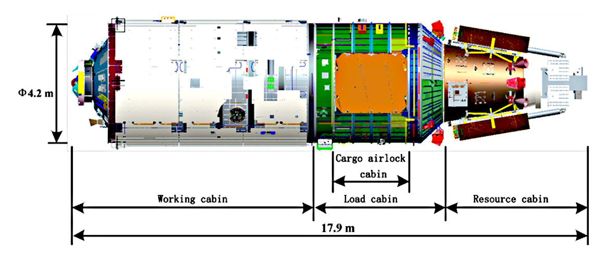
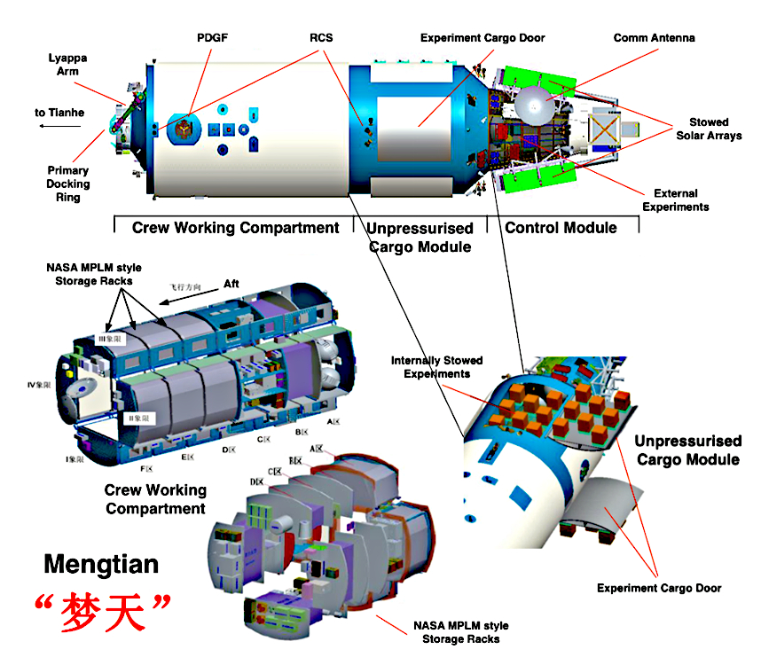
Mengtian consists of four main sections:
1. A fully pressurised Working Cabin closest to Tianhe,
2. An Airlock Cabin in the middle for experiment transfer,
3. An un-pressurised Load Cabin surrounding the Airlock Cabin for experiment deployment,
3. An un-pressurised Resource Cabin at the outer end which also supports the solar arrays.
The Working cabin is the main facility for microgravity scientific research, mainly in fluid physics, materials science, combustion science, basic physics, and aerospace technology. It contains multiple experiment cabinets with internal research racks for high-precision studies. These include high-temperature materials processing and ultra-cold atomic experiments.
The Airlock cabin allows crew to automatically load and retrieve experiments from the Load cabin. It does not provide facilities for crew EVAs. These are conducted from Wentian's Airlock cabin.
The Load cabin has two large cargo doors which can be unfolded to allow experiment payloads to be directly exposed to the space environment, cosmic rays, vacuum, etc. Additional experiment payloads can also be mounted directly to the doors.
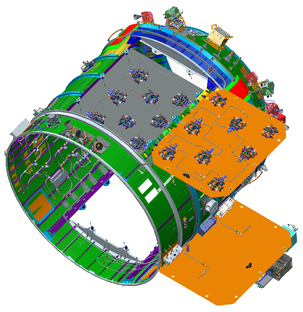
The conical shaped Resource cabin's main function is to support two solar array wings and their drive mechanisms.
These arrays were launched with Mengtian folded against the sides of the Resource cabin. After Mengtian was moved to its permanent position, the arrays were swung out on support beams and deployed.
Externally the resource cabin also supports thermal radiators, a comms antenna and mounting points for exposed scientific payloads.
The un-pressurised interior of the Resource cabin contains backup propulsion and attitude control elements for the Tianhe core module. It also contains power distribution and supporting systems such as batteries, regulators, and interfaces tying into the station's unified energy grid.
Launcher: Long March 5B
Mass: 22,000 kg
Length: 17.9 m
Width: 4.2 m
Pressurised volume: 109 m3
Habitable volume: 32 m3
Xuntian (Tour of Heaven), also known as the Chinese Space Station Telescope (CSST) is currently under development. It will feature a 2 m diameter primary mirror with a field of view around 300 times larger than the Hubble Space Telescope. This will allow the telescope to image up to 40 percent of the sky using its 2.5 gigapixel camera.
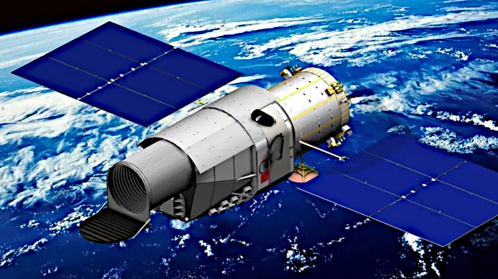
Xuntian is scheduled for launch in late 2026 on a Long March 5B rocket. It will co-orbit with the Tiangong space station in slightly different orbital phases. This will allow it to dock with the Tiangong station periodically for maintenance and upgrades.
The CSST will be used for high-resolution large-area multi-band imaging and slitless spectroscopy surveys, spanning the wavelength range of 255-1,000 nm. The focus will be on observing regions at median-to-high Galactic and ecliptic latitudes. Over a period of 10 years, the survey camera will cover approximately 17,500 square degrees of the sky in various bands.
Beyond its wide-area survey, the CSST will target specific deep fields, aiming for observations that surpass the depth of the broader survey by at least one magnitude. The CSST survey will be highly competitive due to the collective strengths of its angular resolution, depth, wavelength range, capacity for both imaging and spectroscopy and extensive sky coverage
Xuntian's deep space survey will chart the distance and distributions of galaxies from when the universe was a third of its current age and use this information to investigate dark matter and dark energy. This will be achieved through weak gravitational lensing. Gravitational lensing refers to the effect of massive objects, such as galaxies or galaxy clusters, bending light from objects behind them relative to the observer, and functioning similarly to a telescope lens. Weak gravitational lensing can be used to indirectly measure the mass of the foreground lensing object through interpretation of the light distortions, which can be used to infer the distribution of dark matter in galaxy clusters and cosmic structures.
The CSST's observations will complement and enhance other contemporaneous large-scale projects, including the Vera C. Rubin Observatory, the Euclid Space Telescope, and the Nancy Grace Roman Space Telescope.
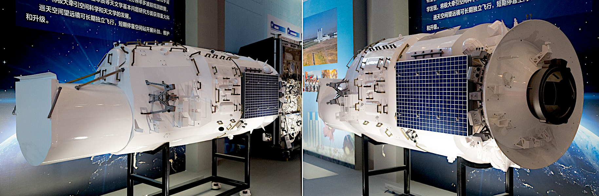
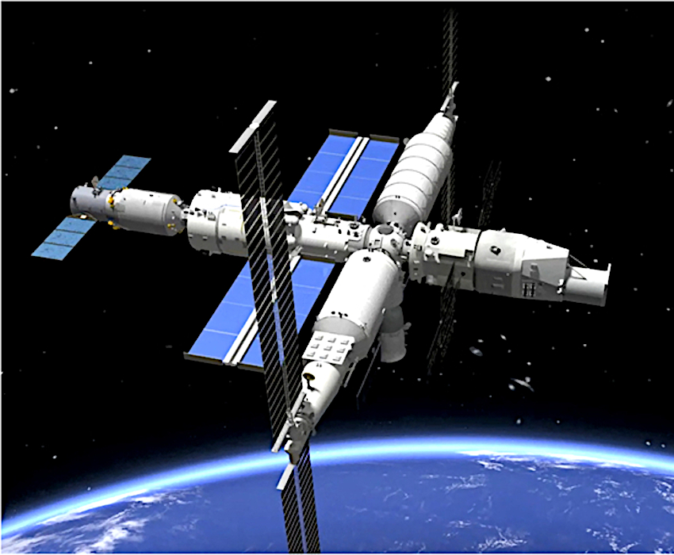
Xuntian has five main instruments:
1. Survey camera,
2. Terahertz receiver,
3. Multichannel imager,
4. Integral field spectrograph,
5. Cool planet imaging coronagraph.
The survey camera is also known as the multi-color photometry and slitless spectroscopy survey module. The module is located at the main focal plane and divided into the multi-color photometry submodule of 7 bands (NUV, u, g, r, i, z, y) and the slitless spectroscopy submodule of 3 bands (GU, GV, GI). The multi-color photometry submodule includes 18 filters, covering 60% of the area of this module. The slitless spectroscopy submodule includes 12 gratings, covering the other 40% of the area.
The terahertz receiver, also known as the high sensitivity terahertz detection module (HSTDM), enables terahertz (THz) astronomical observations from space. Conducting THz observations in space eliminates Earth's atmospheric absorption. HSTDM is a high-resolution spectrometer and the first space heterodyne receiver using niobium nitride (NbN)-based superconducting tunnel junction (Superconductor-Insulator-Superconductor (SIS)) mixer (the NbN SIS mixer).
The Multichannel imager (MCI) has three channels covering the same wavelength range as the survey camera from the NUV to NIR bands, which can work simultaneously. Three sets of filters, i.e., narrow-, medium-, and wide-band filters, will be installed on the MCI to perform extreme-deep field surveys with a field of view of 7.5'x7.5'. The magnitude limit can be stacked to a depth of 29-30 AB mag in three channels. It will study the formation and evolution of high-z galaxies, properties of dark matter and dark energy, and also can be used to calibrate the photo-z measurements with its nine medium-band filters for the main surveys.
The CSST-IFS (Integral Field Spectrograph) has a high spatial resolution of 0.2" and full range optical wavelength coverage (0.35-1.0 μm). Considering the limitation of the 2-meter aperture of the CSST, the CSST-IFS is optimal for targeting compact and bright sources such as galactic central regions (AGN feedback) and star-forming regions.
The cool planet imaging coronagraph (CPI-C) uses a system of masks, prisms and self-flexing mirrors to block out glare from observed stars, to search for exoplanets around them. It will re-image exoplanets discovered by radial velocity observations, study planet formation and evolution, and probe proto-planetary disks. CPI-C works at 0.53-1.6 μm and is equipped with 7 broad passbands.
{kind=link}
{kind=link}
{kind=link}
{kind=link}
{kind=link}
{kind=link}
{kind=link}
{kind=link}
{kind=link}
{kind=link}
{kind=link}
{kind=link}
{kind=link}
{kind=link}
{kind=link}
{kind=link}
{kind=link}
{kind=link}
{kind=link}
{kind=link}
{kind=link}
{kind=link}
{kind=link}